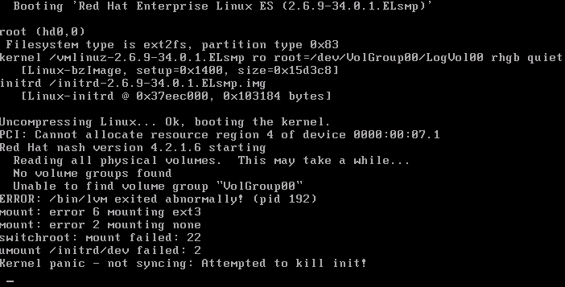
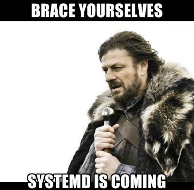
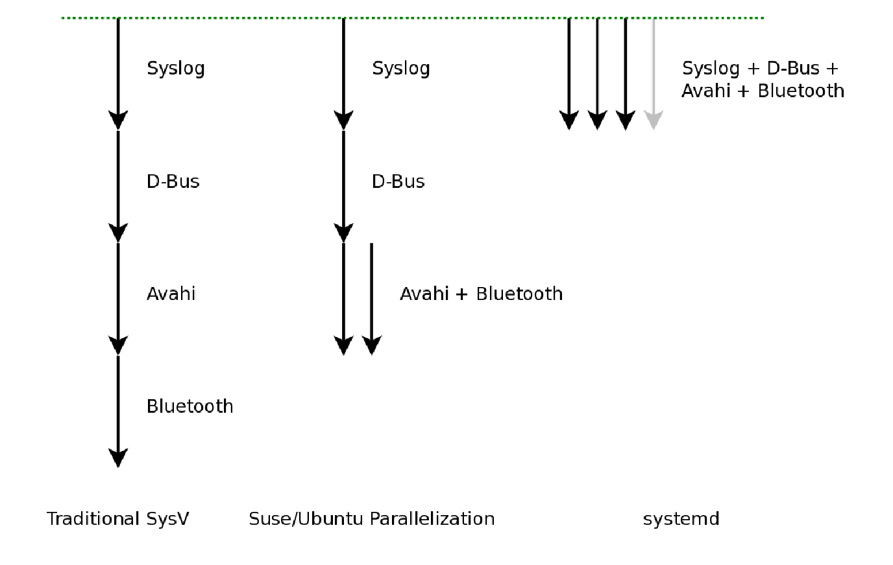
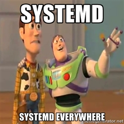
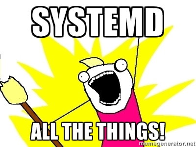
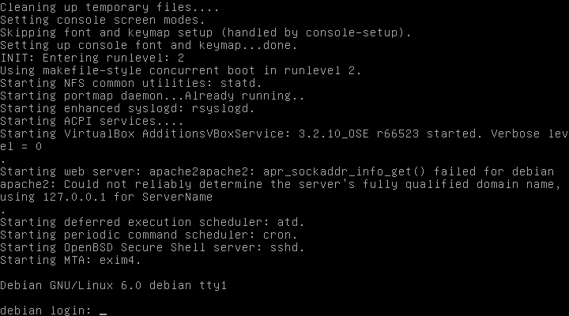

name: light layout: true class: center, middle, light --- #Init Systems ##Corsi Linux Avanzati 2013/2014 ###Fabrizio Ferrai ```html fabrizio.ferrai@gmail.com ``` ### --- layout:false template:light ##Dove trovate queste slides: ```html http://init.ferrai.tk ``` ###<br/>Disclaimer ####Questo sarà un talk abbastanza teorico, per cui non entrerò nel dettaglio se non quando necessario, tuttavia darò per scontate alcune cose (e.g. cosa è un BIOS o cosa è un processo). Siete caldamente invitati perciò ad approfondire gli argomenti trattati (Un elenco di 'Fonti e Approfondimenti' si trova nell'ultima slide, ma non esitate a chiedere.) --- name: sign layout: true .sign[[Fabrizio Ferrai](http://ferrai.tk)] .course[Corsi Linux Avanzati 13/14] --- name:argomenti .title[ ##Argomenti di oggi: ] ??? ##Queste sono le domande principali delle quali ci occuperemo -- .text[###Cosa è un Init System?] -- .text[###Di cosa si occupa?] -- .text[###Breve storia degli Init Systems] -- .text[###Configurazione] --- template:light layout:false ##Facciamo un passo indietro... --- template: sign layout: true --- name:bootstrapping .title[ ##Bootstrapping (Booting) ] -- .text[###Consiste in tutta quella serie di operazioni che, a partire dalla macchina spenta, ha come risultato finale l'avvio del **Sistema Operativo**] -- .text[###Il flusso di controllo della macchina durante il boot (avvio) passa dal **BIOS** al **bootloader** al **kernel**] --- name:boot1 .title[ ##Il boot nel dettaglio 1/2 ] -- .text[###Il boot di Linux si articola attraverso 5 fasi:] -- .text[####1. Il BIOS effettua delle operazioni specifiche per la piattaforma hardware della macchina] -- .footnote[[1] A seconda del bootloader viene utilizzata anche una fase 1.5 : e.g. GRUB può leggere il filesystem per localizzare la Fase 2] .text[####2. Il BIOS esegue il programma di boot dal dispositivo di boot prescelto, ovvero la **Fase 1** del Linux bootloader; essa poi carica la **Fase 2**, che è il grosso del bootloader. **[1]**] --- name:boot2 .title[ ##Il boot nel dettaglio 2/2 ] .text[####3. Il bootloader **carica il kernel**, che si decomprime e mette in atto le funzioni di sistema essenziali, preparandosi alla fase successiva] ??? ##3. Funzioni come hardware di base e memory paging ##4. interrupts, memory management, device and driver initialization -- .text[####4. **start_kernel()** viene quindi chiamata, ed effettua la maggior parte del setup del sistema, prima di lanciare separatamente il processo **idle**, lo **scheduler** e il processo **init** (il primo a essere eseguito **in user space**)] -- .text[####5. Il processo init esegue gli script necessari alla creazione dell'ambiente utente (...)] --- template:light layout:false ##What an Init System does? --- name:whatinitdoes .title[ ##What an Init System does? ] .text[###Avvia/Riavvia il computer] -- .text[###Termina l'avvio una volta che è stato caricato il kernel] -- .text[###Avvia altri programmi (tipicamente "daemons"). <br/>*e.g.: Server Grafico, Webserver, etc.*] --- name:daemons .title[##Demoni] .text[###Etimologia:] -- .text[####“I **demoni** sono personaggi della mitologia greca, alcuni dei quali eseguivano compiti di cui gli dei non potevano occuparsi” - *Wikipedia*] -- .text[###In un sistema operativo:] -- .text[####Un demone è un applicazione che viene eseguita in **background**, anzichè stare sotto il diretto controllo dell'utente.] ??? ##In a multitasking environment -- .text[####Tipicamente offre un **servizio** o si occupa periodicamente di alcuni task, e per questo rimane aperto a lungo nel sistema.] --- name:tuopadre .title[##"Luke, sono tuo padre" (cit.)] .text[###**Init** è l'unico antenato comune di tutti i processi presenti nel sistema: essendo il primo processo ad essere avviato, da lui nascono tutti gli altri] -- .text[###Ha il compito di 'adottare' tutti i processi che rimangono 'orfani' nel sistema a causa della terminazione del loro padre (In Linux tutti i processi, tranne init, devono avere un padre)] -- .text[####Try:] ```bash pstree ``` --- name:reliability .title[##Affidabilità] .text[###Init **DEVE** essere affidabile, perchè:] -- .text[###1. Gira in modalità super utente] ??? ##E ha PID1 -- .text[###2. Controlla servizi di sistema critici] -- .text[###3. Se muore --> Il sistema va in Kernel Panic] ??? ##Perchè la gerarchia dei processi non ha padre ##TUTTE le funzionalità non necessarie vanno fuori! --- name:kernelpanic .title[##Kernel Panic] .center[###] --- template:light layout:false ##Some history --- name:evolution1 .title[##Strategie di init: evoluzione (1)] -- .text[###Sequenziali] -- .text[####Un nuovo demone viene avviato solo una volta che viene terminato l'avvio del precedente] -- .text[####Il parallelismo è nullo.] -- .text[###Gerarchici] -- .text[####Un demone viene avviato solo dopo che tutte le sue dipendenze sono state avviate] ??? ##Spiegare cosa sono le dipendenze -- .text[####Soluzione mista parallelismo/sequenzialità] --- name:evolution2 .title[##Strategie di init: evoluzione (2)] .text[###Startless (Event based)] -- .text[####L'avvio dei demoni è gerarchico] -- .text[####...Ma vengono avviati solo quando richiesto.] --- name:mostimportant .title[##I principali sistemi di init] -- .text[###SysVInit .little[(1975 - Sequenziale)]] ??? ##Datato ma stabile e veloce -- .text[###LaunchD .little[(2005 - Event Based)]] ??? ##Di Apple, ci speravano -- .text[###Upstart .little[(2006 - Event Based)]] ??? ##From Ubuntu -- .text[###OpenRC .little[(2007 - Gerarchico)]] -- .text[###Systemd .little[(2010 - Event Based)]] --- name:sysvinit .title[##SysVInit - Caratteristiche] -- .text[###Fa parte dello standard LSB .little[(Linux Standard Base)]] ??? ##Progetto per la standardizzazione dei sistemi Linux (filesistem structure, pkg format, etc.) -- .text[###Avvio/arresto sequenziale dei demoni] -- .text[###Crea i demoni leggendo dal file di configurazione /etc/inittab] -- .text[####Contiene i comandi:] -- ```bash reboot shutdown killall poweroff telinit # serve per cambiare runlevel (più dettagli a breve...) sulogin wall # per mandare un warning su tutte le tty ``` --- name:launchd .title[##LaunchD - Caratteristiche] -- .text[###È un framework opensource per la gestione di **demoni**, **applicazioni**, **processi**, **script**] ??? ##Utilizzato solo in Mac Os X, ma principale responsabile del rinnovamento nel mondo dei sistemi di init -- .text[###Scritto da Dave Zarzycki (Apple Inc.) e rilasciato con licenza Apache (dal 2006)] ??? ##Non adottato per problemi di licenza -- .text[###Sostituisce:] ```bash init rc init.d script rc.d script SystemStarter (Mac OS X) #gestisce i demoni inetd / xinetd crond / atd ``` ??? ##Architettura simile a systemd ##inetd: daemons che fanno partire applicazioni quando arriva una connessione su una determinata porta --- name:upstart .title[##Upstart - Caratteristiche] ??? ##From Ubuntu -- .text[###Rimpiazza solo init, Event Based] -- .text[###Servizi avviati/arrestati tramite eventi] -- .text[###Eventi generati mentre servizi avviati/arrestati] -- .text[###Eventi in broadcast, respawning dei servizi in caso di crash] -- .text[###Comunicazione attraverso D-Bus] --- .title[##Default init system nelle principali distribuzioni] -- .pull-left[ ###SysVInit - Debian (actual) - RHEL6 ] -- .pull-left[ ###OpenRC - Gentoo ] -- .pull-left[ ###Upstart - Ubuntu (actual) - Mint ] -- .pull-top[ ###systemd - Arch Linux - Fedora - RHEL7 (pending) - Ubuntu (planned) - Debian (next release) - CoreOS - Mageia - OpenSUSE - Sabayon Linux - ... ] --- name:brace template: light layout:false class: center ### --- template:light layout:false ##systemd --- name:sysdov .title[##Systemd - Overview] -- .text[###È un manager di sistema e di servizi per Linux] -- .text[###Compatibile con SysV e LSB scripts] -- .text[###**Lennart Poettering** e **Kay Sievers** (Red Hat) sono gli autori (e attuali manutentori)] --- name:sysdcaratt .title[##Systemd - Caratteristiche] -- .text[###Compatibile esclusivamente con Linux] -- .text[###Parallelizzazione totale e comunicazione tramite D-Bus/Socket] -- .text[###Avvio On-Demand] -- .text[###Mantiene i punti di Mount/Automount] -- .text[###Tiene traccia dei processi tramite CGROUPs] --- name:parallel template: light layout:false class: center ### Source: systemd slides --- name:sysd template: light layout:false class: center   .title[###Systemd punta a rimpiazzare tutto...] --- template:light layout:false ##Some more depth --- name:sysvconfig .title[##SysVInit: configurazione] -- .text[####Legge configurazioni da /etc/inittab (nel quale è definito il default per ogni runlevel)] -- .text[####E avvia di conseguenza i processi necessari all'avvio del sistema (eg. getty)] --  --- name:runlevels .title[##Runlevels] .text[####Il **runlevel** è lo stato esecutivo di un sistema operativo con init in stile SysV.] -- .text[###**Runlevel 0**: sistema completamente spento] -- .text[###**Runlevel 1 o S**: modalità singolo utente] -- .text[###**Runlevels 2-5**: modalità multiutente (Debian default: 2)] -- .text[###**Runlevel 6**: riavvio] --- name:inittab .title[##Esempio di /etc/inittab] ```bash id:2:initdefault: l0:0:wait:/etc/init.d/rc 0 l1:1:wait:/etc/init.d/rc 1 l2:2:wait:/etc/init.d/rc 2 l3:3:wait:/etc/init.d/rc 3 l4:4:wait:/etc/init.d/rc 4 l5:5:wait:/etc/init.d/rc 5 l6:6:wait:/etc/init.d/rc 6 pf::powerwait:/etc/init.d/powerfail start pn::powerfailnow:/etc/init.d/powerfail now po::powerokwait:/etc/init.d/powerfail stop 1:2345:respawn:/sbin/getty 38400 tty1 2:23:respawn:/sbin/getty 38400 tty2 3:23:respawn:/sbin/getty 38400 tty3 4:23:respawn:/sbin/getty 38400 tty4 5:23:respawn:/sbin/getty 38400 tty5 6:23:respawn:/sbin/getty -f /etc/issue.welcome2l 38400 tty6 ``` --- name:initscaff .title[##Init script scaffold] ```bash #!/bin/sh case "$1" in start) echo "Starting!" ;; stop) echo "Stopping!" ;; restart) echo "Restarting!" ;; esac ``` --- name:servicecontrol1 .title[##Controllo manuale dei servizi (Pt.1)] .text[###Possiamo controllare manualmente in modo molto semplice i vari servizi del sistema:] -- ```bash $ /etc/init.d/$nomeServizio start $ /etc/init.d/$nomeServizio stop $ /etc/init.d/$nomeServizio restart ``` --- name:servicecontrol2 .title[##Controllo manuale dei servizi (Pt.2)] .text[###Esiste anche un comando specifico per controllare i servizi:] -- ```bash $ service $nomeServizio start $ service $nomeServizio stop $ service $nomeServizio restart ``` --- name:sysvadv .title[##SysVInit: vantaggi] -- .text[###**Semplicità**: creare un servizio equivale a creare uno script di shell] -- .text[###**Ordine garantito di esecuzione**: i servizi vengono eseguiti sempre uno dopo l'altro, in questo modo il controllo è totale] --- name:sysvdis .title[##SysVInit: svantaggi] -- .text[####**Sequenziale**: prestazioni non ottimali a causa del parallelismo non sfruttato] -- .little[.text-left[*(In realtà Debian utilizza una versione modificata di SysV, dotata di parallelismo)*]] -- .text[####**Server centric**: i riavvii sui server dovrebbero essere rari, quindi rapidità nel boot non prioritaria] -- .text[####**Hotplug inesistente**: al momento della sua progettazione non c'era l'esigenza di aggiungere/rimuovere risorse a runtime] -- .text[####**Script esegue operazioni standard**: al di là dei vari controlli di duplice istanza e risorse occupate il problema è il controllo delle dipendenze --> **operazione costosa** (dovrebbe occuparsene init)] --- name:upstartconf1 .title[##Upstart: configurazione (1)] -- .text[###Jobs] -- .text[####**Task Job**: piccolo programma, termina in tempo fissato] -- .text[####**Service Job**: rimane avviato in background a meno che non venga fermato esplicitamente] -- .text[####**Abstract Job**: non ha sezioni exec, né un PID, ma può essere avviato/fermato] --- name:upstartconf2 .title[##Upstart: configurazione (2)] .text[###**Events**: ci sono 3 tipi di eventi su Upstart:] -- .text[####**Segnali**: Asincroni: chi lancia l’evento non aspetta che venga accettato da tutti] -- .text[####**Metodi**: Sincroni: si comportano come chiamate a funzione] -- .text[####**Hooks**: Job speciali: simili ai segnali, ma sincroni] -- .text[####Esempio: *starting* e *stopping*] --- name:upstartfiles .title[##Files di configurazione] -- .text[###Ogni **Job** è definito in un file di configurazione, in plain text, il cui nome è del tipo: ***$nomeFile.conf***] -- .text[###Ogni Job di sistema è contenuto nella cartella ***/etc/init***] -- .text[####Job example:] -- ```bash # Un Job astratto può anche non contenere nessuna linea # Per informazione inseriamo l'autore del JOB author "foo" # E qui sotto la descrizione del job stesso description "questo è uno scaffold di job astratto" # Questo è una JOB configuration completa ``` --- name:cron .title[##Cron] -- .text[###**Cron** è un demone per pianificare l'esecuzione di determinati "lavori" (jobs) in modo pianificato, su base temporale] --- name:cronconfig .title[##Configuration example: Cron] -- .text[###In Upstart, la configurazione di cron è questa:] -- ```bash description "regular background program processing daemon" start on runlevel [2345] stop on runlevel [!2345] expect fork respawn exec cron ``` --- name:sysdconf1 .title[##Systemd: Units (1)] -- .text[###Unit types] -- .text[####**Service**: i tipici demoni che possono essere avviati/fermati/riavviati/ricaricati] -- .text[####**Socket**: unità che incapsula i socket, sia del file-system che dell'Internet] -- .text[####**Device**: un device nel Linux device tree] -- .text[####**Mount**: incapsula un punto di mount nella gerarchia del filesystem] --- name:sysdconf2 .title[##Systemd: Units (2)] .text[####**Automount**: punto di automount, che ha un corrispondente mount] -- .text[####**Swap**: per controllare i devices di swap allo stesso modo in cui vengono controllati i mount] -- .text[####**Target**: usata per raggruppare logicamente altre unità, di per se non fa nulla, ma referenzia altre unità] -- .text[####**Snapshot**: come i *target* non fa nulla, ma referenzia altre unità; usata per salvare/ripristinare lo stato dell'init system] -- .text[####**Timer**: per avviare servizi su base temporale, come cron] --- name:sysdconf3 .title[##Systemd: Units (3)] .text[####**Path**: codifica informazioni riguardo un path monitorato da systemd, per le path-based activations] -- .text[####**Scope**: queste unità non sono configurate tramite files, ma sono create durante l'esecuzione tramite l'interfaccia bus di systemd; raggruppano insiemi di processi di sistema per una migliore gestione delle risorse] -- .text[####**Slice**: utilizzata per gestire le risorse di un gruppo di processi in modo gerarchico] --- name:servicecontrol3 .title[##Controllo manuale dei servizi (Pt.3)] .text[####Possiamo vedere tutto quello che systemd controlla tramite il comando:] ```bash $ systemctl ``` -- ```bash $ systemctl list-units -t service #solo i servizi attivi ``` -- ```bash $ systemctl status sshd.service sshd.service - OpenSSH server daemon Loaded: loaded (/lib/systemd/system/sshd.service; enabled) Active: active (running) since Thu, 15 Dec 2011 12:11:05 ... Main PID: 2091 (sshd) CGroup: name=systemd:/system/sshd.service \ 2091 /usr/sbin/sshd -D ``` -- ```bash $ systemctl start sshd.service $ systemctl stop sshd.service $ systemctl enable sshd.service #avvia al boot $ systemctl disable sshd.service #disabilita da startup $ systemctl kill sshd.service #uccide tutte le istanze ``` --- name:fonti .title[##Fonti e approfondimenti:] - http://en.wikipedia.org/wiki/Linux_startup_process - https://www.debian.org/doc/manuals/debian-reference/ch03.en.html - http://en.wikipedia.org/wiki/Init - http://wiki.gentoo.org/wiki/Comparison_of_init_systems - http://en.wikipedia.org/wiki/UNIX_System_V - http://en.wikipedia.org/wiki/Linux_Standard_Base - http://en.wikipedia.org/wiki/Linux_kernel_API - http://en.wikipedia.org/wiki/Launchd - http://en.wikipedia.org/wiki/Upstart - http://en.wikipedia.org/wiki/D-Bus - http://en.wikipedia.org/wiki/Systemd - http://en.wikipedia.org/wiki/Runlevel - http://www.freedesktop.org/wiki/Software/systemd/ - https://www.linux.com/learn/tutorials/527639-managing-services-on-linux-with-systemd - http://0pointer.de/blog/projects/systemd.html - http://0pointer.de/blog/projects/why.html - http://www.jonmasters.org/blog/2011/04/29/response-to-why-systemd/ --- name:finished template: light layout:false class: center ### --- name:cc template: light layout:false class: center ##Grazie per l'attenzione! ###<img src="img/ccbysa.png" alt="" style="width: 30%;"> ####Queste slides sono licenziate Creative Commons<br> Attribution-ShareAlike 3.0 Unported http://www.poul.org